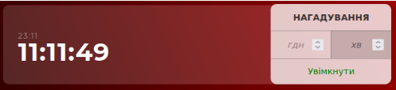
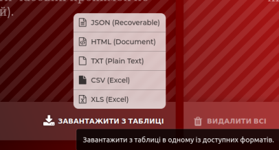
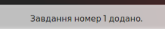
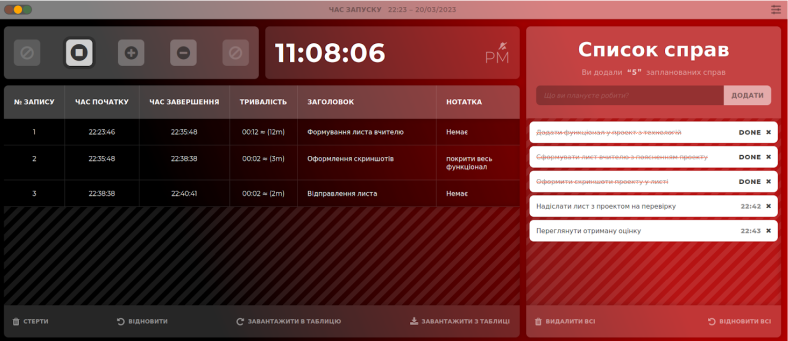

Проект виконала учениця 11 класу, Бондар Анна

Для питань щодо проекту можете звертатись на електронну пошту:
bondar.anna@elitar.rv.ua
Натисніть для перегляду інструкцій:
Інструкція до користування засобами для тайм-менеджменту
Проект включає в себе засоби для вимірювання часових проміжків з можливістю додавання заголовків до записів в таблиці цих проміжків та додаткових нотаток, які можуть бути додані для кращої організації часового планування.
На початку роботи, коли до таблиці не було додано записів, відображається інструкція для взаємодії через панель керування:
Також є можливість встановлення часу нагадування, який відтворює звук сповіщення через певний вказаний проміжок часу:
Крім того, проект містить зручний та мінімалістичний інструментар для ведення списку справ. На початку роботи, коли до таблиці не було додано записів, відображається рекомендація для взаємодії:
Проект також включає в себе функцію збереження записів у декількох можливих форматах файлів для подальшого їх відновлення у таблиці:
Інформація про авторку
Для того, щоб відкрити цей елемент потрібно натиснути на секцію у правому нижньому куті. У цій секції згідно з планом відображена коротка інформація про мене та активне посилання на поштову адресу, що дає змогу написати лист, користуючись вбудованими засобами користувачів. Щоб вийти з цієї секції потрібно два рази швидко по ній натиснути, що вказано нижче під посиланням на пошту.
Рядок сповіщень
Також згідно з планом був доданий рядок сповіщень та проведені відповідні зміни в коді для того, щоб користувач при взаємодії з системою міг постійно бачити статус задач та повідомлення про помилки вводу. Всі можливі помилки користувачів були передбачені та коректно опрацьовуються та інформація про них відображається у рядку сповіщень.
Це повідомлення з'являється на екрані відразу після додавання нового запису до списку справ. Плавність появи забезпечується засобами обраної мови програмування. Також за допомогою мови програмування процес сповіщень організований так, що цей рядок з'являється тільки коли є нове повідомлення.
Щоб відкрити панель налаштувань потрібно натиснути на відповідну кнопку у правому верхньому куті:
Розроблені можливості для таймера:
Спрощене керування
Ця опція залишає для користувача тільки кнопки початку запису та безперервне додавання записів у таблицю, детальніше робота кнопок була описана у попередньому листі.
Спрощена таблиця
Ця опція зменшує деталізацію записів в таблиці, а саме залишає тільки номер запису, його тривалість та заголовок. Це може бути корисним для більшого фокусу при аналізі використаного часу. При цьому приховані дані не видаляються та будуть повернені, якщо користувач обере відповідну (цю ж) опцію в налаштуваннях.
Просунуті можливості
Розроблені можливості для режимів:
Темний
Ця опція змінює забарвлення на темні кольори, що корисно у темні пори доби або для легшого фокусу над утвореними записами.
Зосередженість на часі
Ця опція приховує секцію "Список справ" для більшого зосередження саме на ведені таблиці часових проміжків роботи користувача.
Спрощений
Цей режим дозволяє користувачу керувати системою тільки комбінаціями клавіш, які наведені на зображенні панелі налаштувань. Користь цього режиму у можливості швидкого користування та створення записів, якщо запам'ятати комбінації.
Приклад користування проектом в цілому:
Переваги цього проекту очевидні. Він допоможе користувачам ефективніше планувати свій час, стежити за своїми досягненнями та завданнями та мати доступ до них з будь-якого місця та пристрою. Проект також має мінімалістичний та простий інтерфейс, що робить його легким у використанні для користувачів будь-якого рівня зручності.